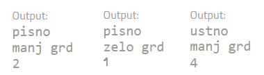

Profesor Grozni je res grozni profesor. Vsi dijaki se ga grozno bojijo. Ocenjuje namreč zelo grozno. A njegovo ocenjevanje ni povsem naključno, ali pa morda je?
Profesor Grozni ima namreč program, ki naključno določi 3 stvari. Prvič: Ali bo dijak ocenjen ustno ali pisno. Drugič: Ali bo profesor Grozni med ocenjavanjem gledal zelo grdo ali malo manj grdo. In tretjič: Katero oceno bo dobil dijak: 1, 2, 3, ali 4 (ocene 5 profesor Grozni namreč ne daje). Popravi program tako, da bo delal pravilno.
